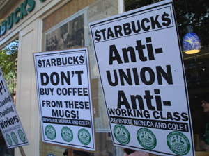
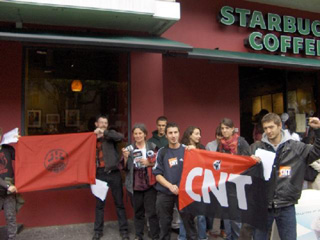

Submitted on Wed, 01/07/2009 - 4:39am

For Immediate Release:
Starbucks Workers Union (Industrial Workers of the World)
Contact: Cole Dorsey- organizer IWW Starbucks Workers Union,
616-540-0243
Faced With Snowballing Legal Woes, Starbucks Settles Case Over Lawyer's
Illegal Interrogations of Union Workers
First Labor Board Settlement to Disallow Repeat-Offender
Starbucks From Denying Guilt
Grand Rapids, MI (Jan. 5, 2009)- Just days after Starbucks suffered a
decisive defeat in a lengthy Labor Board trial in New York, the embattled coffee
giant has settled a complaint from the National Labor Relations Board here over
the unlawful interrogation of baristas by a company lawyer. The Board
investigation was triggered by charges from the IWW Starbucks Workers Union that
alleged one of the company's anti-union law firms, Varnum, Riddering, Schimdt,
and Howlett, illegally interrogated baristas set to give testimony in a Michigan
Occupational Safety and Health Administration hearing. In addition to revealing
law-breaking from Starbucks' counsel, the settlement is significant as the first
where the Labor Board did not allow Starbucks to deny guilt--a sanction for
repeatedly violating the rights of baristas seeking secure work hours, a living
wage, and respect on the job. The company is still set to stand trial on
Wednesday in Grand Rapids on a separate count of illegally firing outspoken union barista, Cole
Dorsey.
Submitted on Tue, 12/09/2008 - 5:10pm
Grand Rapids, MI (12/08/2008)- The Michigan Occupational Safety and
Health Administration has found after trial that Starbucks unlawfully
terminated a barista here in retaliation for filing a safety complaint.
The barista, a member of the IWW Starbucks Workers Union, was
retaliated against after complaining about the effects of a perennially
leaking roof. The MIOSHA determination comes less than a month before
embattled Starbucks faces a trial in Grand Rapids at the National Labor
Relations Board over anti-union retaliation.
"Two federal agencies are holding Starbucks accountable in Grand Rapids
for wantonly trampling employee rights. Without the IWW Starbucks
Workers Union they may have gotten away with it," said Cole Dorsey, the
fired barista and union member.
Submitted on Sat, 10/04/2008 - 8:41pm
Disclaimer - The opinions of the author do not necessarily match those of the IWW. This article is reposted in accordance to Fair Use guidelines.
By LAUREN SHEPHERD - NEW YORK (AP) - Starbucks Corp. is facing another complaint from the
National Labor Relations Board alleging that the gourmet coffee chain engaged in
unfair labor practices by firing a barista in Michigan.
The complaint, filed last month by the Detroit office of the NLRB, stems
from an investigation into a charge made by employee Cole Dorsey earlier this
year.
According to the NLRB complaint, Dorsey--a member of the Industrial
Workers of the World union at Starbucks--was fired June 6 from his job at a
store in Grand Rapids, Mich. Before being fired, Dorsey had been given two prior
disciplinary warnings by his store manager.
The complaint alleges that Dorsey received the warnings and was fired
because of his "sympathies for and activities on behalf of" the IWW Starbucks
Workers Union. The union has been attempting to organize workers at the
chain.
Submitted on Mon, 06/30/2008 - 5:35pm
Coordinated Actions Across the U.S., Europe, and Latin America Could Be Largest Ever Against Coffee Chain
For Immediate Release:
IWW Starbucks Workers Union, StarbucksUnion.org
Grand Rapids , MI ( 06-30-2008 )- Union members and social activists are gearing up for what may be the largest, global coordinated action against Starbucks ever. Protesters will decry what they see as an epidemic of anti-union terminations by the world’s largest coffee chain. Starbucks and its CEO Howard Schultz have exhibited a pattern of firing outspoken union baristas ever since the advent of the IWW Starbucks Workers Union in 2004 and are demonstrating the same practice against the CNT union in Spain.
"On July 5th people around the world will show Starbucks that we, baristas along with our supporters, will have a voice and Starbucks discrimination and repression of our efforts will not go unchecked", said Cole Dorsey.
Submitted on Fri, 06/06/2008 - 1:54pm
 Grand Rapids firing comes in the midst of Unfair Labor Practice charges being investigated by the NLRB against Starbucks.
Grand Rapids firing comes in the midst of Unfair Labor Practice charges being investigated by the NLRB against Starbucks.
Grand Rapids, MI (06/06/2008)- Starbucks terminated a barista active in the IWW Starbucks Workers Union today as part of its ongoing effort to combat a growing movement of employees pushing for a living wage and secure work hours. The barista, Cole Dorsey, was fired after two years of service while he was coordinating a union recruitment drive at Starbucks stores in Grand Rapids. Starbucks' pretext for the illegal anti-union firing was that Dorsey was guilty of some months-old attendance infractions.
"Today I joined the growing number of baristas that Starbucks has fired in its relentless union-busting campaign," said Cole Dorsey. "Starbucks' disrespect for the right to join a union is appalling and absolutely will not stop our efforts to have a voice at work."